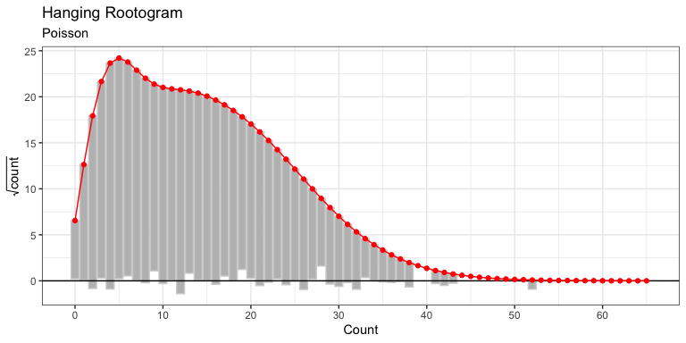

The networkscaleup package provides a suite of functions to both fit and diagnose the fit of several popular models for Aggregated Relational Data (ARD). These models are fit using Stan (RStan) and glmmTMB.
Installation
networkscaleup can be installed from CRAN with
You can install the development version of networkscaleup from GitHub with:
# install.packages("pak")
pak::pak("ilaga/networkscaleup")Simulating Data
The networkscaleup package allows simulation of synthetic ARD from commonly used models.
## simulate some simple data
library(networkscaleup)
set.seed(2)
sim_dat <- make_ard(family = "poisson")We can then fit the (true) model to this data and evaluate the fit of this model. Several diagnostics are provided, including rootograms and residual computation.
pois_fit_list <- fit_mle(sim_dat$ard, family = "poisson")
pois_root <- hang_rootogram_ard(
ard = sim_dat$ard,
model_fit = pois_fit_list
)
pois_root
We see that the hanging rootogram indicates good fit, as would be expected. More flexible models and additional model checking diagnostics are also available.